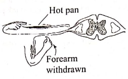
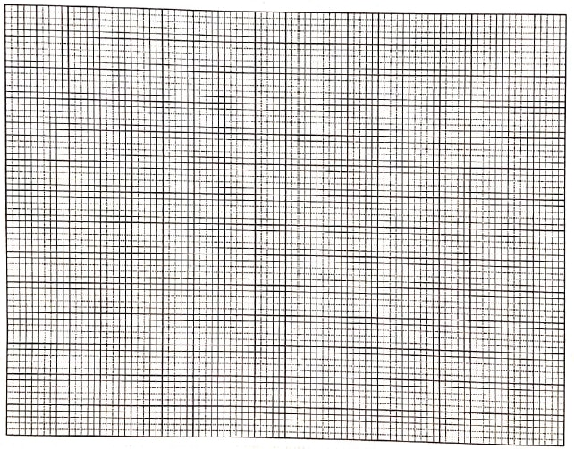
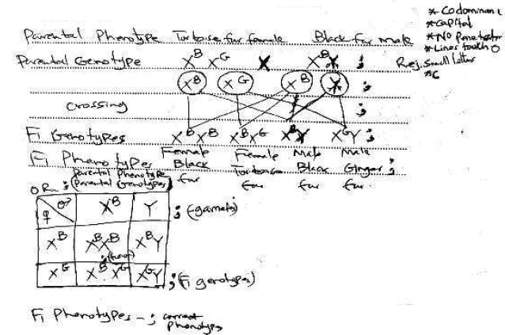
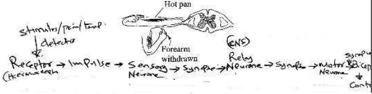
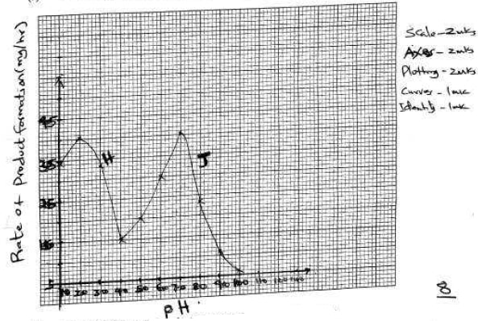

Biology
Paper 2
SECTION A (40 marks)
Answer all the questions in this section in the spaces provided.
- In an experiment to investigate the effect of sodium chloride on the growth rate in a spinach
seedling, seeds were treated with different concentrations of sodium chloride. The results are
as recorded in the table below.
Concentration of sodium chloride (mol/l) Perecentage of spinach seeds which started to grow roots Mean root length (mm) 0.00 99.98 17.70 0.06 98.20 15.60 0.12 92.0 10.20 0.18 54.0 7.60 - From the results in the table above, explain the effect of increasing the concentration of sodium chloride. (3 marks)
- Apart from a ruler, state two other equipment one would need to determine the rate of growth in the roots. (2 marks)
- With a reason, state one other part of the seedling the students would focus on to determine the effect of sodium chloride on growth. (2 marks)
- State the likely effect on the seedling of increasing the concentration of sodium chloride to 2.20 mol/1. (1 mark)
- The table below shows results of blood cell counts per mm' of blood from a sample of people
living at different altitudes.
Red blood cells (x104) 4.8 5.3 6.7 7.6 8.47 9.82 White blood cells (x104) 0.45 0.45 0.45 0.45 0.45 0.45 Altitude (metres) 750 1,500 2,250 3,000 4,500 4,500 - Explain the relationship between:
- red blood cells count and the altitude; (3 marks)
- white blood cells count and the altitude. (3 marks)
- Explain why chances of nose-bleeding increase with altitude in humans. (2 marks)
- Explain the relationship between:
-
- State one importance of irritability to living organisms. (1 mark)
- In an experiment, students treated seedlings as illustrated below

- Account for the observations made in seedling I. (3 marks)
- Explain the similarity in the end results made in seedlings II and III. (2 marks)
- State the likely treatment that would make seedlings II and III respond like seedling I. (2 marks)
- In cats, the gene for fur colour is sex-linked. Letter G represents the gene for ginger fur
colour while letter B represents the gene for black fur colour in a given cat species. These
genes are codominant. Heterozygous females have ginger and black patches of fur and their
phenotype is described as tortoise-shell.
- With reference to the information given above, what is meant by the term codominance? (1 mark)
- Explain why male cats with a tortoise-shell phenotype do not usually occur. (2 marks)
- A tortoise-shell female was crossed with a black male. Determine the genotypes and phenotypes of the offspring. (5 marks)
- A person accidentally touches a hot pan and responds as illustrated in the diagram
below.

- Explain how the response illustrated above occurs. (6 marks)
- Explain how auxins are utilised as selective weed killers in agriculture. (2 marks)
SECTION B (40 marks)
Answer question 6 (compulsory) and either question 7 or 8 in the spaces provided after question 8.
- The table below shows the rate of product formation for two
enzymes, H and J over a range of pH values.
pH 1.0 2.0 3.0 4.0 5.0 6.0 7.0 8.0 9.0 10.0 Rate of product formation for enzyme H (mg/hr) 34.5 40.5 33.5 15.0 - - - - - - Rate of product formation for enzyme J (mg/hr) - - - 15.0 20.0 30.0 40.5 23.5 11.0 6.0 - On the same axis, plot graphs of the rate of product
formation against pH. (8 marks)
 - Account for the rate of product formation for enzyme H
between:
- pH 1.0 and 3.0 (3 marks)
- pH 3.0 and 7.0. (3 marks)
- From the graph, determine:
- the pH value at which the rate of product formation of the two enzymes was the same (1 mark)
- the value of the rate of product formation for enzymes H and J at the pH value stated in (c)(i) above (1 mark)
- the optimum pH value for enzyme J (1 mark)
- State one variable that may lead to the change in the optimum rate of product-formation of the two enzymes. (1 mark)
- Suggest with a reason, the likely part of the human alimentary canal where enzyme H would be found. (2 marks)
- On the same axis, plot graphs of the rate of product
formation against pH. (8 marks)
- Giving examples, describe the following interactions among
organisms: (20 marks)
- predator-prey
- symbiosis
- parasitism.
- Explain the effect of increased physical activity on the following
organ systems: (20 marks)
- heart
- lungs
- kidneys
- skin.
Marking Scheme
SECTION A (40 marks)
Answer all the questions in this section in the spaces provided.
- In an experiment to investigate the effect of sodium chloride on the growth rate in a spinach
seedling, seeds were treated with different concentrations of sodium chloride. The results are
as recorded in the table below.
Concentration of sodium chloride (mol/l) Perecentage of spinach seeds which started to grow roots Mean root length (mm) 0.00 99.98 17.70 0.06 98.20 15.60 0.12 92.0 10.20 0.18 54.0 7.60 - From the results in the table above, explain the effect of increasing the concentration
of sodium chloride. (3 marks)
- Increased NaCl conc./having more NaCl ions decreases water potential/osmotic potential/increase osmotic pressure/makes water potential more negative outside the seed/seedling in the surrounding solution to be hypotonic to the cell sap in the seedling;seed cells take in water by osmosis/are dehydrated/lose water molecules to the surrounding solution;reducing the growth enzyme activity; hence reduced growth rate
- Apart from a ruler, state two other equipment one would need to determine the rate of
growth in the roots. (2 marks)
- Thread;(wire/string)
- Book
- Pen;marker (pen)
acc. dye/water proof ink/bloating paper/tissue paper
- With a reason, state one other part of the seedling the students would focus on to
determine the effect of sodium chloride on growth. (2 marks)
- Rate of growth/increase in length of shoot tip/apex
- It is a region of (active) cell division/growth
- State the likely effect on the seedling of increasing the concentration of sodium
chloride to 2.20 mol/1. (1 mark)
- The seedling will be (dehydrated)/lose water(hence) wither/die/dry
- From the results in the table above, explain the effect of increasing the concentration
of sodium chloride. (3 marks)
- The table below shows results of blood cell counts per mm' of blood from a sample of people
living at different altitudes.
Red blood cells (x104) 4.8 5.3 6.7 7.6 8.47 9.82 White blood cells (x104) 0.45 0.45 0.45 0.45 0.45 0.45 Altitude (metres) 750 1,500 2,250 3,000 4,500 4,500 - Explain the relationship between:
- red blood cells count and the altitude; (3 marks)
- No. of red blood cells increase with altitude; to increase oxygen carrying capacity (by haemoglobin molecules in blood); since oxygen concentration is lower at higher altitude. OWTTE
- white blood cells count and the altitude. (3 marks)
- White blood cells serve to protect the body against harmful microorganisms/pathogens; the quantities of pathogens/vulnerability of the body to microbial attack is not dependent on the altitude (to be countered by white blood cells); hence the number of white blood cells count is constant at whatever altitude. OWTTE
- red blood cells count and the altitude; (3 marks)
- Explain why chances of nose-bleeding increase with altitude in humans. (2 marks)
- Atmospheric pressure decreases with increase in altitude; the imbalance between the outer atmospheric pressure at high altitude and the internal blood pressure (generated by the heart) results in (one) nose bleeding at high altitudes/internal blood pressure is higher than the(outer) atmospheric pressure OWTTE
- Explain the relationship between:
-
- State one importance of irritability to living organisms. (1 mark)
- Enable living organisms to avoid dangerous/harmful/harsh climatic/environmental conditions
- Enable living organisms obtain/access favourable environmental conditions(light,water,oxygen) any one
- In an experiment, students treated seedlings as illustrated below
- Account for the observations made in seedling I. (3 marks)
- Positive photoropism/tip bends towards light; light cause the migration of auxins(produced at the tip) to the darker side(of the shoot) Reulting in faster division of cells/elongation/growth on the darker/opposite side of the shoot hence bending towards the light
- Explain the similarity in the end results made in seedlings II and III. (2
marks)
- Both seedlings remain upright ( acc.) straight/erect
- Seedling II does not have tip while III the tip has been covered by an opaque material preventing light causing unequal distribution of auxins; acc. uniform distribution of auxins
- State the likely treatment that would make seedlings II and III respond like
seedling I. (2 marks)
- Fitting an agar block treated with IAA auxins at the decapitated end of seedling II
- Removing the opaque material covering the tip of seedling III/replacing the opaque cap with a transparent one.
- Account for the observations made in seedling I. (3 marks)
- State one importance of irritability to living organisms. (1 mark)
- In cats, the gene for fur colour is sex-linked. Letter G represents the gene for ginger fur
colour while letter B represents the gene for black fur colour in a given cat species. These
genes are codominant. Heterozygous females have ginger and black patches of fur and their
phenotype is described as tortoise-shell.
- With reference to the information given above, what is meant by the term
codominance? (1 mark)
- Both alleles are expressed/shown equally in the phenotype(of the offspring)/none supresses the other gene for ginger and black fur colour from expressing itself in the phenotype(tortoise shell)
- Explain why male cats with a tortoise-shell phenotype do not usually occur. (2
marks)
- The gene for coat colour contained on the X-chromosomes
- Males only inherit one X-chromosome form females/mothers/Y-chromosome does not carry the gene for the color coat
- A tortoise-shell female was crossed with a black male. Determine the genotypes and
phenotypes of the offspring. (5 marks)

- With reference to the information given above, what is meant by the term
codominance? (1 mark)
- A person accidentally touches a hot pan and responds as illustrated in the diagram
below.

- Explain how the response illustrated above occurs. (6 marks)
- The stimuli/heat/pain is detected by temperature/pain receptor (acc tehrmoreceptors) (in the skin/dermis); an impulse if generated; impulse is transmitted along a sensor neurone to the CNS/spinal cord;(chemical) transmission across the synapse to realy neurone; across a synpase to motor neurone; across a synapse to Biceps muscles/effective via motor neurone; muscles/effectors,contract (hand moves away). This is known as simple reflex action
- Explain how auxins are utilised as selective weed killers in agriculture. (2 marks)
- Selective weed killers contain auxins which are absorbed by the weeds(than desired/beneficial/ plants); making the weeds grow abnormally/die out; ahead of the beneficial plants
- Explain how the response illustrated above occurs. (6 marks)
SECTION B (40 marks)
Answer question 6 (compulsory) and either question 7 or 8 in the spaces provided after question 8.
- The table below shows the rate of product formation for two
enzymes, H and J over a range of pH values.
pH 1.0 2.0 3.0 4.0 5.0 6.0 7.0 8.0 9.0 10.0 Rate of product formation for enzyme H (mg/hr) 34.5 40.5 33.5 15.0 - - - - - - Rate of product formation for enzyme J (mg/hr) - - - 15.0 20.0 30.0 40.5 23.5 11.0 6.0 - On the same axis, plot graphs of the rate of product
formation against pH. (8 marks)
 - Account for the rate of product formation for enzyme H
between:
- pH 1.0 and 3.0 (3 marks)
- Rate of product formation increases with increase in pH to the optimum then decreases
- pH 2 is the optimum pH value for the activity of enzyme H
- Btn pH 1 and 2 enzyme H/enzyme molecules are activated
- Btn pH 2 and 3 enzyme H/enzyme molecules are
denatured/destroyed
(acc. enzyme is inactivated/less active for denatured)
- pH 3.0 and 7.0. (3 marks)
- Rate of product formation(sharply) decreases with increase in pH; Enzyme H (is not favoured by increase in pH hence) is denatured; No product forms above pH 4.0 to 7.0 because all enzymess(enzyme molecules) are denatured
- pH 1.0 and 3.0 (3 marks)
- From the graph, determine:
- the pH value at which the rate of product formation
of the two enzymes was the same (1 mark)
- 4.0
- the value of the rate of product formation for
enzymes H and J at the pH value stated in (c)(i) above (1 mark)
- 15.0 mg/hr
- the optimum pH value for enzyme J (1 mark)
- 7.0
- the pH value at which the rate of product formation
of the two enzymes was the same (1 mark)
- State one variable that may lead
to the change in the optimum rate of product-formation of the two enzymes. (1 mark)
- Temperature
- Substrate concentration
- Enzyme concentration
- co-factors
- co-enzymes
- (enzyme) inhibitors
- Suggest with a reason, the likely part of the human
alimentary canal where enzyme H would be found. (2 marks)
- stomach
- acidic medium/low pH
- On the same axis, plot graphs of the rate of product
formation against pH. (8 marks)
- Giving examples, describe the following interactions among
organisms: (20 marks)
- predator-prey
- A predator is an animal that hunts/kills another/other animals(prey) for food
- e.g. A dog and ahre (acc. any other correct example)
- Preys device survival mechanisms in their habitats not to be
eaten/killed; to survive and reproduce/propagate their lineage; to this
end
Preys(adaptations) - They run faster(strong hind muscles)
- Comouflage with the environment
- Mimic the predator( acc.some have a wider field of view/vision)
- Some emit some chemicals/smell that turn off the predator
- Others like porcupine use quills/spikes/spines to fight off predators
- Some have good sense of smell to detect
predators
On the other hand, predators also evolve/devise means to be able to survive in such an ecosystem for instance
Predators(Adaptations) - Running faster;strong jaws/long/sharp canines/talons
- camouflaging with the environment
- mimicking the prey
- Sharp eyesight
- Strong sense of smell
- Produce venom/poison that paralyse/kill prey
- symbiosis
- A close long term association between two organisms of different
species where the two mutually benefit from each
other
Example 1: The bacteria in the rumen/gut of herbivores which help herbivores digest cellulose as they are sheltered by the herbivores
Example 2: The bacteria found in the human digestive system/gut/colon. The bacteria are sheltered by humans; the bacteria help humans in the synthesis of vitamin K/B12/ensure microbial balance
Example 3: The nitrogen fixing bacteria on the root nodules of legumes; the bacteria benefit from sheltering by the plant while it facilitates the conversion of free atmospheric nitrogen into a form that can be readily absorbed by the plants
- A close long term association between two organisms of different
species where the two mutually benefit from each
other
- parasitism.
- A kind of (inter-specific) relationship/association where one
member/organism, the parasite benefits while the host is harmed/loses;
also called antagonistic/antipathetic
symbiosis
Example 1: A tick sucking blood/nutrients from a cow(host); making the cow to be anaemic/skin destroyed/malnourished/transmission of diseases - parasite can be external/Ecto-parasite or internal/Endo-parasite;
e.g. liverfluke
Example 2: A liverfluke sucks blood/nutrients from host and can cause death/bodily harm on the internal organs of the host including blocking blood vessels
- A kind of (inter-specific) relationship/association where one
member/organism, the parasite benefits while the host is harmed/loses;
also called antagonistic/antipathetic
symbiosis
- predator-prey
- Explain the effect of increased physical activity on the following
organ systems: (20 marks)
- heart
- Increased heartbeat/rate/cardiac frequency;
- increase blood pressure; pumping more blood to the muscles/peripheral blood vessels; at a faster rate; supplying oxyegn;nutrients for continued oxidation/respiration; to yield energy needed to sustain the (vigorous) contraction/relaxation of muscles during the physical activity; carbon(IV) oxide/lactic acid/other nitrogenous wastes/metabolic wastes produced during the process are also eliminated/transported to the relevant excreyory organs for elimination; the waste if left to accumulate can also intoxicate/poison cells/cause muscle cramps/pain/fatigue
- lungs
- panting/increased breathing rate; cause the lungs to expand/increase in volume to take in more air/oxygen; and deflate to expel more carbon(IV) oxide; more oxygen is taken in (during exercise) to sustain the process of muscle respiration/to produce the required energy (for constant muscle contraction and relaxation)
- kidneys
- Kidneys also maintain the blood plasma pH and osmotic balance; by eliminating excess hyrogen ions (H+) that accumulate due to production of lactic acid/CO2 during the exercise
- To maintain the osmotic balance, kidneys conserve sodium ion (Na+); and reabsorb water (in the kidney tubule); leading to reduction in the volume of urine produced; during exercise the kidneys tend to filter out more urea releasing more in the urine
- skin.
- Due to increased muscle activity during physical activity, one sweats (more); elimianting nitrogenous wastes/excess water; through the skin/sweat pores) cooling the body; After (water in) sweat evaporates, the increased interna body temperature also leads to dilation of superficial blood vessels (vasodilation)/blood flowing near the skin; leading to loss of excess heat (to the atmosphere) by radiation/convection; the hair on the skin surface also lie flat to allow for the loss of heat (to the environment) by radiation/convection
- heart